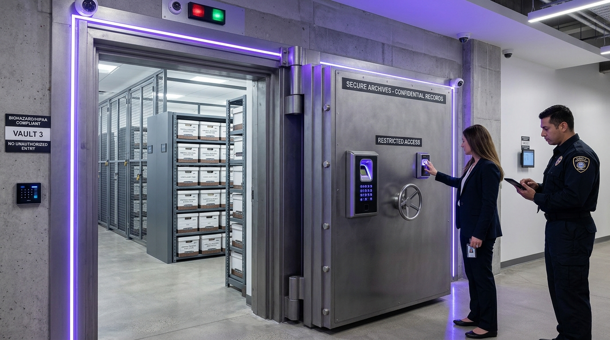

The ArchiVault Advantage
Industry-leading certifications, technology, and expertise that set us apart from other records management providers.
SOC 2 Certified
Audited security controls meeting enterprise compliance standards
Climate Controlled
Constant 65°F / 40% RH environment for optimal preservation
Fire Protected
FM-200 clean agent suppression systems in every vault
Biometric Access
Multi-factor authentication at every record of biometric access point
Retrieve Any Record, Anytime, Anywhere
Our intelligent archival index ensures every file is barcoded and instantly locatable. Request urgent physical courier delivery or sub-hour scan-on-demand directly from your secure portal.
Dedicated Vaults for Healthcare & Legal Archives
Engineered to exceed the most stringent regulatory mandates. Biometric mantraps, blast-rated vault doors, and continuous digital chain-of-custody for life-sciences and jurisprudence.

Healthcare Archival Wing
HIPAA & HITECH COMPLIANTProtected retention for patient medical charts, clinical trial records, radiology films, and pathology specimens with complete statutory retention tracking.
Legal & Litigation Hold Wing
ABA & SOX AUDIT READYSubterranean evidence storage and active discovery archives with court-admissible custody trails and instant litigation freeze capabilities.
Climate-Controlled Tape & Media Vaulting
Clean-room subterranean vaults purpose-built for LTO cartridges, server backups, and optical media. Shielded against electromagnetic pulses and strictly held at 65°F and 40% RH.
What Our Clients Say
See how ArchiVault helps organizations streamline their records management and maintain compliance.
"Moving our 100,000+ files to ArchiVault freed up an entire floor of our office building. The ROI was immediate and significant."
"The client portal is fantastic. Our legal team can request and receive digital copies of stored contracts within minutes."
"Their compliance management tools saved us during our last government audit. Every document was accounted for and easily accessible."
Frequently Asked Questions
Find answers to common questions about our physical vaults, digital retrieval SLA, and regulatory compliance.
Every archival carton and file is assigned a unique cryptographic barcode and indexed in our automated storage system. Emergency retrieval requests trigger immediate dispatch from our nearest regional vault, with dedicated GPS-tracked courier vehicles delivering sealed, tamper-evident cases directly to your facility with full chain-of-custody logging.
Our dedicated regulatory storage wings comply fully with HIPAA, HITECH, Sarbanes-Oxley (SOX), ABA litigation hold standards, and Federal Rule 37. Vaults feature dual-custodian biometric mantraps, 24/7 CCTV, and waterless gaseous clean-agent fire suppression (FM-200 / Novec 1230) that leaves zero residue on sensitive physical paper or film.
When you request a digital copy through the ArchiVault Client Portal, technicians pull the physical carton from high-density shelving, scan the requested document at 600 DPI optical clarity with full-text OCR indexing, and upload the 256-bit AES encrypted PDF directly to your portal dashboard in under 30 minutes.
Our clean-room tape and media capsules are Faraday-shielded against electromagnetic interference (EMP) and strictly regulated at a constant 65°F (18°C) and 40% Relative Humidity. Racks are grounded with anti-static flooring, positive-pressure air filtration, and continuous automated telemetry monitoring.
Our automated retention lifecycle system alerts your compliance team when files reach their statutory expiration date. Upon authorized sign-off, records undergo cross-cut industrial shredding in accordance with NAID AAA standards, and you receive an immutable Certificate of Destruction for legal and regulatory audit records.
Start Your Free Records Assessment
Let our certified archivists audit your records volume and deliver a tailored, cost-effective storage blueprint in under 48 hours.